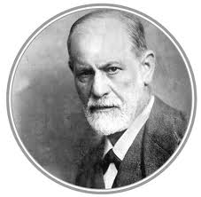
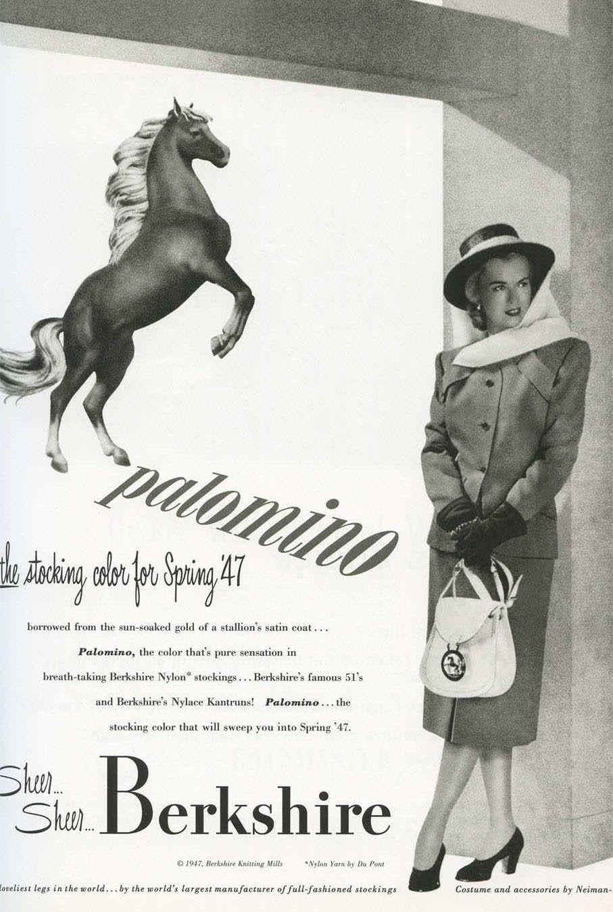

Freudian Influences: The Discovery
of the Unconscious
"In the pages that follow I shall bring forward proof that there is a psychological technique which makes it possible to interpret dreams, and that, if that procedure is employed, every dream reveals itself as a psychical structure which has meaning and which can be inserted at an assignable point in the mental activities of waking life." —Sigmund Freud, in the introduction to The Interpretation of Dreams
"To follow the contours of process as in psychoanalysis provides the only means of avoiding the product of process, namely neurosis or psychosis." —Marshall McLuhan, p.60, The Gutenberg Galaxy
"[T]he student of media, like the psychiatrist, gets more data from his informants than they themselves have perceived." —Marshall McLuhan, Chapter 31/Television
 |
Sigmund Freud |
McLuhan said he was Thomistic through and through. He was also a thoroughgoing Freudian. Despite occasional lapses in empirical method, Freud's influence in clinical psychology and cultural studies has been profound. This includes not only his acknowledged disciples (Carl Jung, Franz Alexander, Sandor Ferenczi, and Norman O. Brown), and literary figures like James Joyce and the New Critics (Frank Leavis), but modern anthropologists like Claude Lévi-Strauss, Joseph Campbell, and Jordan Peterson.
So pervasive is his influence that those using his methods and investigative tools are not always aware of their debt. Of particular interest was Freud's choice of unconventional subject matter: dreams, jokes, puns, myths, nursery rhymes, fables, slips of the tongue, and other epiphenomena thought unworthy of scientific inquiry. Following Freud's pioneering lead, McLuhan opened the entire field of popular culture to inspection and analysis, including advertising, news, entertainment (television, movies, comic strips, and comic books) and discerned in detective fiction an example of negative capability in play:
"The meaning of the telegraph mosaic in its journalistic manifestations was not lost to the mind of Edgar Allan Poe. He used it to establish two startlingly new inventions, the symbolist poem and the detective story. Both of these forms require do-it-yourself participation on the part of the reader. By offering an incomplete image or process, Poe involved his readers in the creative process in a way that Baudelaire, Valery, T. S. Eliot, and many others have admired and followed." —Marshall McLuhan, Chapter 31/Television
 |
Madonna Figure |
In The Mechanical Bride McLuhan applied Freudian dream analysis to cultural phenomenon and media. For example, he noted the phallic imagery in the juxtaposition of an innocent young woman (Madonna figure) with the picture of a rearing stallion, in a magazine ad for nylon stockings; and complained that 'mad men' (Madison Avenue men) often employed subliminal sexual suggestion like this to bludgeon the libidos of susceptible American men.
Commenting on Marguerite Mead's study Male and Female in The Mechanical Bride McLuhan says:
"No Pinkerton snoop-sleuth ever had a more bizarre assignment than Dr. Mead imposed on herself in order to get to see and feel, from the inside, exactly how a primitive society functions. To these techniques of observation is added the psychoanalytic insight that the most valuable data are yielded to individuals or groups involuntarily, in moments of inattention. It is that latter consideration which makes popular culture so valuable as an index of the guiding impulses and the dominant drives in a society.... In looking at the folklore of the industrial society that resulted from these wishes [e.g. mass production], we are justified in seeing a wish-fulfillment on a huge scale as surely as the psychologist is justified in deciphering wishes in the dream symbols of his patients."
The premise of The Mechanical Bride is that the American dream is shot through with pathological wish fulfillment in the form of trashy delusions perpetuated by the film colony, manipulative advertising, the false promise of mechanistic technologies (popular science, modern know-how, and market research) to hoodwink unsophisticated consumers. He describes a number of corrupting influences, e.g. "the notion of distinction and culture as being a matter of consumption rather than the possession of discriminating perception and judgment," "the automatic leveling process exercised by applied science" that has equated the sexes, "the supremacy of technique at the expense of nutriment," that success in America is measured by purchasing power, that the ultimate happiness consists in the acquisition of material goods, that culture is conferred upon those who purchase expensive and refined products, that the race to the top is so dehumanizing that the winners "arrive in a nude and starving condition." McLuhan's genius and originality consist in applying the techniques of Freudian dream analysis to the social, cultural and economic spheres insofar as they provide exhibits of the "American dream," and he did so with a consummate command of language, satirical wit, and the authority of unimpeachable scholarship.
"It would be nonsense to pretend that culture ratings à la Emily Post are not often made in accordance with the consumer mentality. The present ad [for an expensive whiskey] is only one of thousands which loudly insist on depriving men of their birthrights by rating them in accordance with their supposed preference for some purchased product. And to do so is perhaps a weakness inherent in any market economy. If success can be measure only by purchasing power, then the intellectually creative men with whom the future of mankind always rests will be regarded only as floperoos." (my emphasis)
McLuhan devotes an entire chapter ("The Gadget Lover") in Understanding Media to Narcosis, or the numbness with which we defer, deflect, muffle, and ameliorate the psychological effects of new technologies, but isn't narcosis just another name for Freudian repression? And isn't a culture unconsciously fixated on a particular model of perception living a mass dream that is subject to rational interpretation and correction? And isn't our willed ignorance of the world we inhabit a kind of narcosis or dream?
It is a commonplace that Freud's, and Jung's, ideas permeate our everyday language and thinking. For example, we often say that a person with skewed perceptions (or a blind spot) 'has a complex.' As McLuhan recognized, a society's cultural bias, or 'model of perception,' is in every sense, a complex. Dream symbolism, regression, repression, projection, rationalization, displacement, conversion symptoms, denial, fixation, narcissism, and other reaction formations play an important role in McLuhan's universe as well. Said W.H. Auden of Freud at his death in 1939: "[I]f often he was wrong and, at times, absurd, to us he is no more a person now, but a whole climate of opinion."